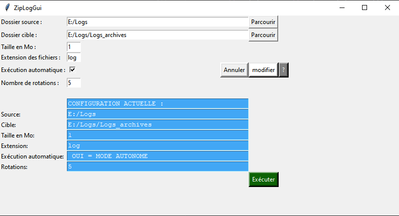

Aide version 1.0

Dossier source :
Dossier où se trouvent les fichiers à compresser.
Il est possible de parcourir les dossiers, ou d’entrer directement les chemin dans la zone de saisie.
Dossier cible :
Dossier vers lequel copier les fichiers compressés, l’utilisateur exécutant le programme doit bénéficier de droits en écriture dans le dossier cible.
Il est possible de parcourir les dossiers, ou d’entrer directement les chemin dans la zone de saisie.
Taille en Mo :
Taille des fichiers à partir de laquelle ils sont éligibles à la compression et l’archivage.
Ce nombre doit être un entier supérieur à 0.
Extension des fichiers :
L’extension des fichiers à archiver (généralement 3 caractères : log, txt..) sans le « . ».
Le programme ne supporte pas actuellement des fichiers sans extension.
Exécution automatique :
Si coché, la prochaine exécution du programme se fera sans interaction avec la configuration précédente (sans interface graphique).
Il est ainsi possible d’intégrer le programme dans une tâche planifiée.
Pour réinitialiser la configuration, lancer le programme avec l’option –reset en ligne de commande.
Nombre de rotations :
Le nombre de versions de l’archive à conserver, 5 par exemple, correspond à 5 versions plus la version en cours, soit 6 fichiers.
Le nombre saisi doit être un entier supérieur à 0.
Pour modifier la configuration en cours, cliquez sur modifier et ensuite sur exécuter pour lancer le programme, la configuration utilisée est celle dans le panneau de résumé dans la partie basse de l’application.
Le programme enregistre un fichier _Ziplog.log qui consigne l’activité des archivages, dans le dossier source, l’utilisateur doit également bénéficier des droits en écriture dans ce dossier.